叶青：武汉30天，有件遗憾的事
原文链接 备份链接 非常时期，武汉成了全国人民挂念、祈福的城市。封城后，武汉人民的真实生活是什么样？随着抗“疫”有条不紊的进行，武汉发生了哪些变化？还存在哪些问题？ 正和岛自1月26日起特别推出“叶青专栏”。叶青是一位定居武汉40年的市 …
一周前，我在这里写了《武汉，这些天来的街头巷尾》，不少朋友说，很感兴趣，也有意义——包括住在武汉的朋友，因为他们基本就待在家里，很少外出；而我，仍然每天开着车，在这座城市里四处转。
我决定接着写这个话题——我在武汉的街头巷尾所见所闻。
原本想写过去一周的，结果，匆匆整理，仅仅是三天的图片，就已经蛮多的了。
所以，今天先写这2月18日至2月20日的情形吧。
与上次一样，这里的图片，有的是单反相机拍的，有的只用手机“悄悄地拍”……
2020年2月18日
从这一天开始，武汉的管制，陡然升级了。
其中之一，武昌区规定，不允许超市对个人顾客开放，只能进行社区团购。
在武汉家乐福的洪山广场店门口，我们看到了这样的场景。
同时，我们在这里的二十来分钟里，看到尚不知情的个人顾客，到此不得其门而入的，也有四五个。
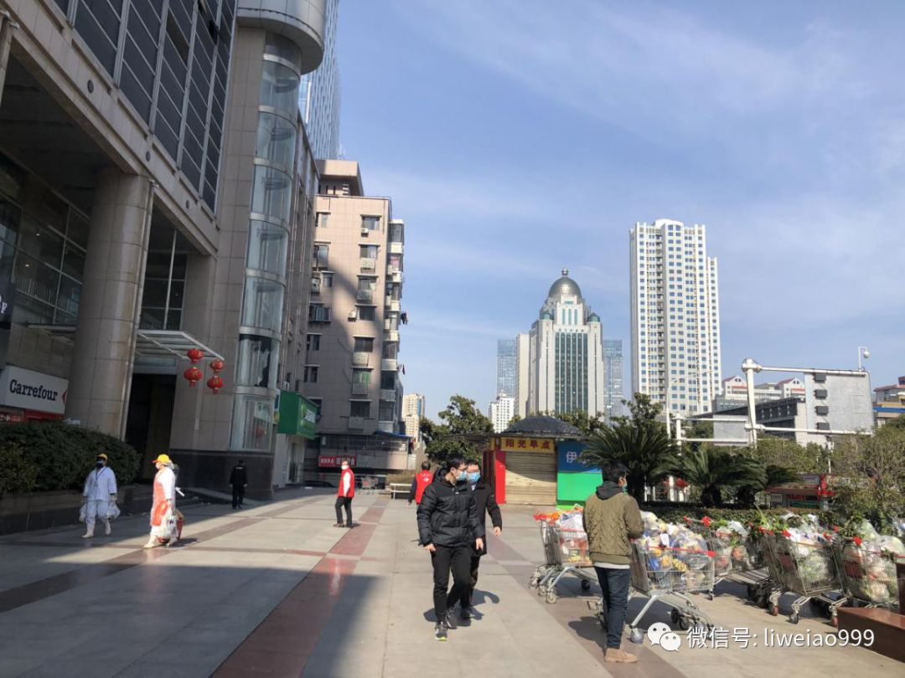

因为惦记着要抓紧时间大量采购“护手霜”、“润肤露”等商品，以送给李医生生前所在的武汉市中心医院——医院的医护人员，因为长期戴着手套，又大量使用酒精、消毒液等洗手，亟需护手霜——我们又跑到了汉阳区的家乐福十升店。

（这里可以接纳个人客户，但必须要有盖章的“路条”——居民通行证）
我们将情况向店方负责人说明，得到了他的理解和支持，在这里买到了339支（瓶）护手霜、润肤露，装了7个箱子；然后，送到了武汉市中心医院。
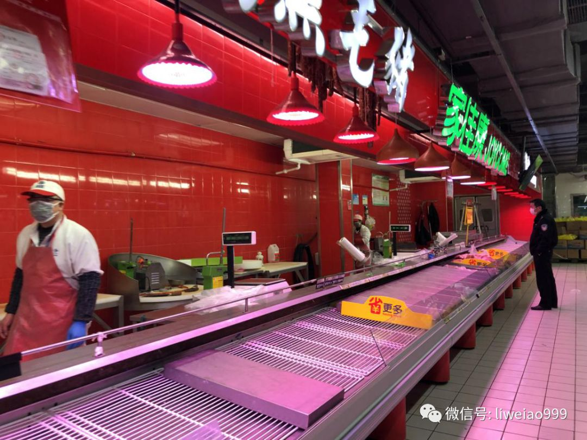
（新鲜肉，在武汉，依然很紧俏，基本只有上午来才买得到）

（这位老人，是一个人来超市买东西的。店长说，这天店里的顾客，比前一天少了很多）

（我们把7箱339支护手霜、润肤露，当天下午就送到了武汉市中心医院。还有朋友联系了其他捐赠方，捐赠了1000支护手霜，送到了另一家医院——武汉同济医院。那批捐赠品的包装箱上写着“你守护世界，我守护你”。不仅仅是护手霜，我的几位朋友，通过熟人之间的自愿募款，筹集了20多万元资金，这些天来，为武汉的几家医院，采购了几百件防护服，还给他们配送加班的盒饭——国难当头，有钱出钱，有力出力——每一位公民都在努力！）
2月19日

（2月19日，武展东路上，这家小超市，还可以接纳个人顾客，但都得量体温、排队进入——店里控制顾客的人数，包括警察也得在外面老老实实等着）
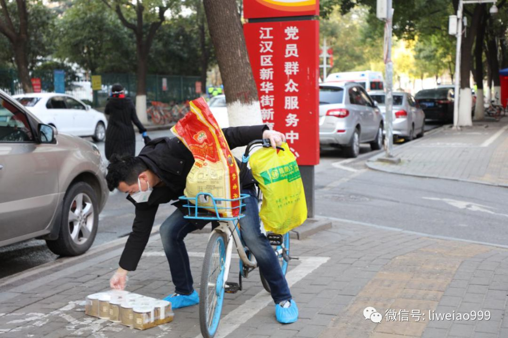
（还是在武展东路上，骑着单车采购的人，因为买的东西太多，掉在地上，很狼狈地去捡起来——类似的场景，这些天我见到了好几回……）
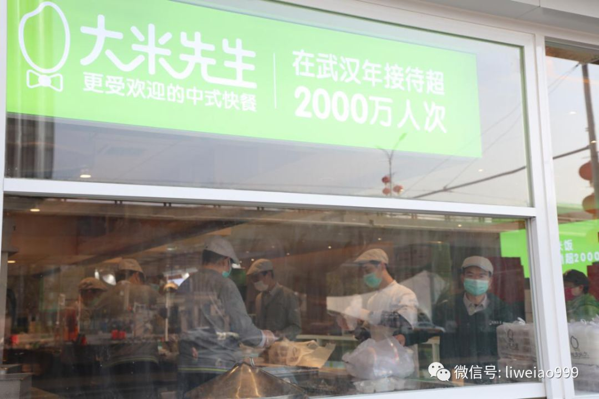
（解放大道，有一家做中式快餐的“大米先生”。工作人员说，他们现在不卖给个人，只供应对面的武汉协和医院）
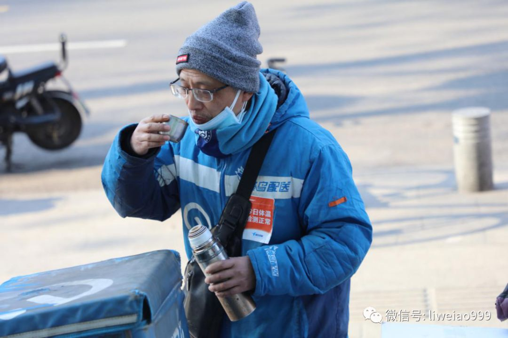

（“大米先生”店外，蜂鸟配送的棋手在等着给医院送饭，他们的衣服上专门贴上了标签“今日体温，检测正常”）
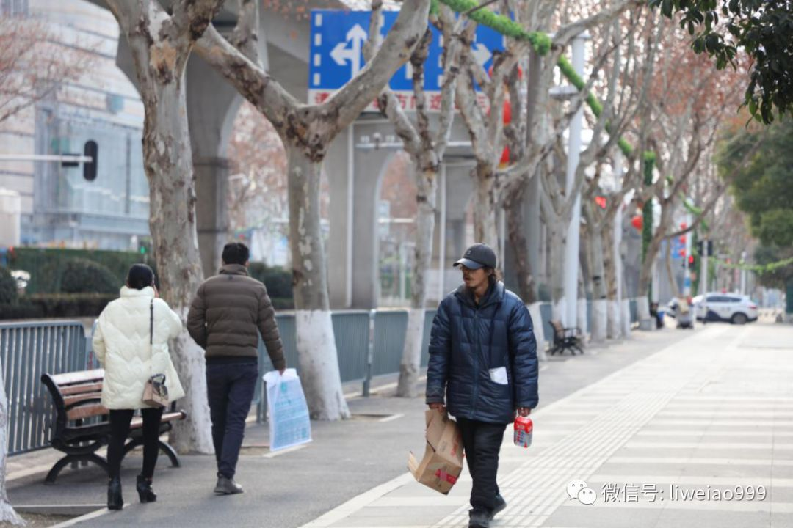
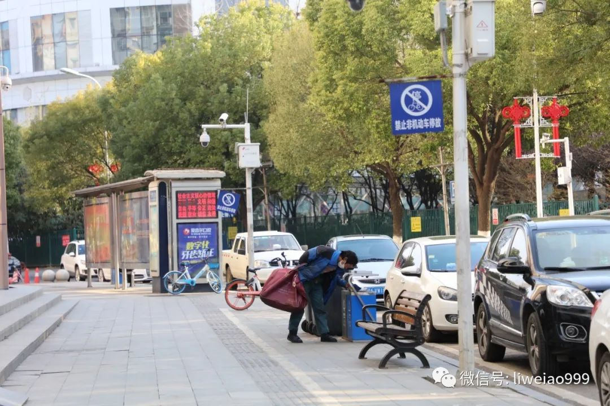
（京汉大道及武展东路上的拾荒人，可供他们捡拾的废品，这些天可能也不多吧）
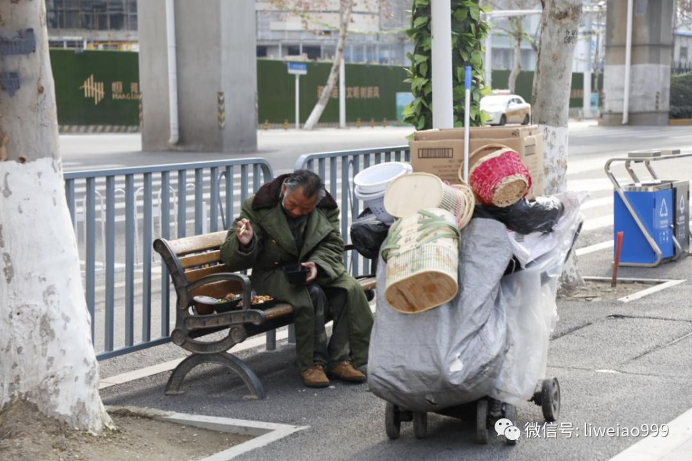
（还是在这京汉大道上，这位老人的午餐，似乎比较丰盛。我在想着：他是一个什么样的人呢？这顿午餐，他从哪里获得的呢……）
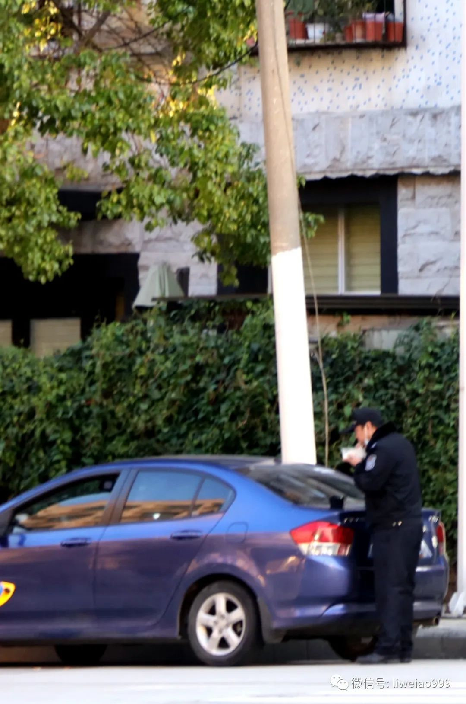
（与可以坐在长椅上吃饭的老人相比，值守在长升路上一家隔离点外的这位警察，只能站着吃他的晚餐）
 （长升路上的三江航天酒店，已被征用为“隔离点”。附近的居民说，在前一天，也就是2月18日，来了两辆公交车，带走了这里不少的人，要么送到方舱医院，要么送到别的医院）
（长升路上的三江航天酒店，已被征用为“隔离点”。附近的居民说，在前一天，也就是2月18日，来了两辆公交车，带走了这里不少的人，要么送到方舱医院，要么送到别的医院）

（三江航天酒店的斜对面——古田公寓，贴着“有疫小区”的标签）

（在古田公寓外，有一堆还未燃尽，余温犹在的纸钱堆，这是烧给哪位逝者的？逝者的死因，又是什么呢……）
2月20日
2月20日这天，我们又到了武汉国博中心——武汉红十字会接收捐赠的仓库。
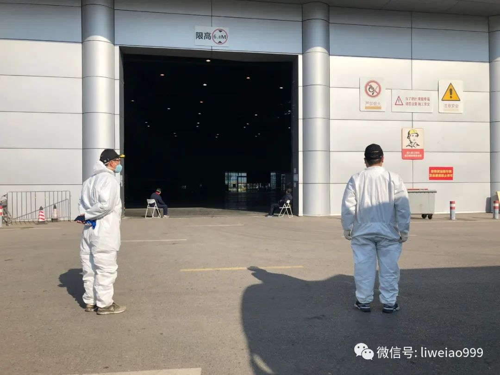

（相比十几天前，这里捐赠的物资不到1/10了。工作人员说，“基本可以做到当天物流送来，我们当天配送”）
武汉市让武汉红十字会一开始承担捐赠物资接收和配送的工作，实在也是太难为他们了——在高峰期，这个库房堆放的捐赠物资，可能有现在的100倍，甚至更多。红十字会既不是专业的仓储物流配送机构，人手也少得可怜。
下次中国再有大灾大难，谁来负责物资捐赠接收和配送，这是一个很值得思考的问题——当然，最好是中国永远不要再有大灾大难……
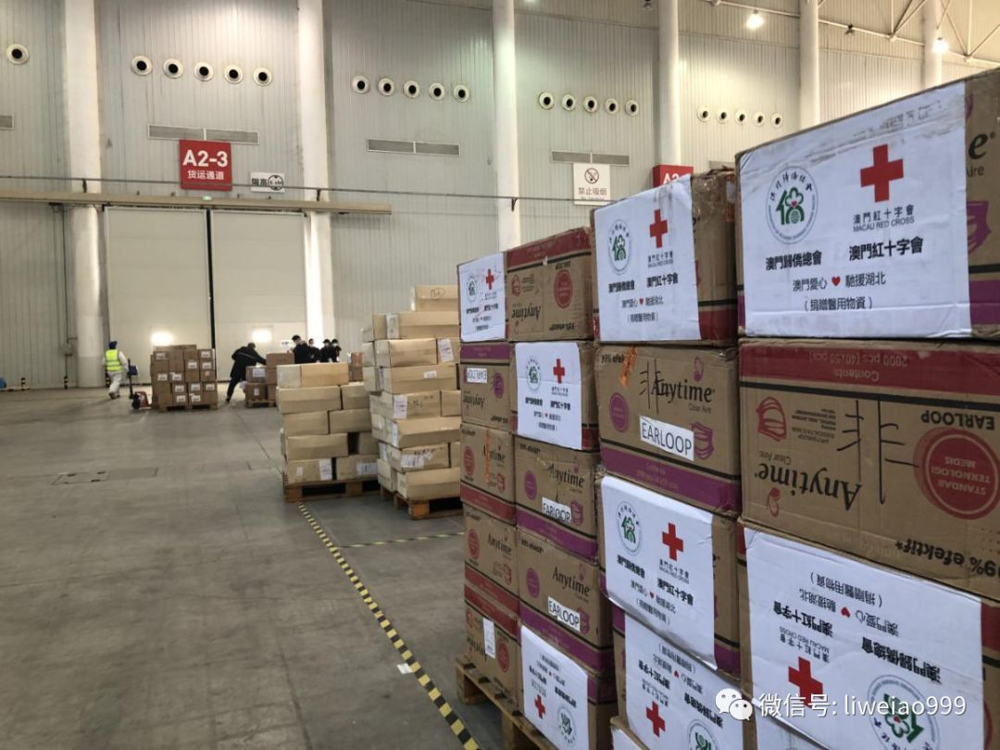
（来自中国澳门的捐赠）
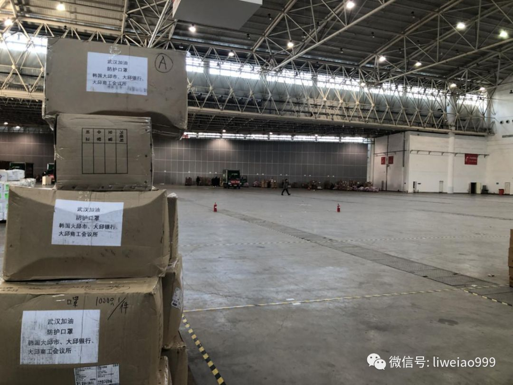
（在我们看到来自韩国大邱捐赠品后不久，大邱也出现了新冠肺炎疫情患者的猛增，2月25日，韩国总统文在寅，跑去了大邱）


（在武汉国博中心，还有一家“方舱医院”）
等车的医护人员在闲聊今天的趣事：
“我问一个患者，你想谁么？他说，‘我想你啊’。我就笑：嘿，千万别跟我们学医的开玩笑，等会你就受不了了……”

（经过拦江路，看到路上有这样一位行动不便者。他在用两腿撑地，费劲地推着轮椅往后退……）
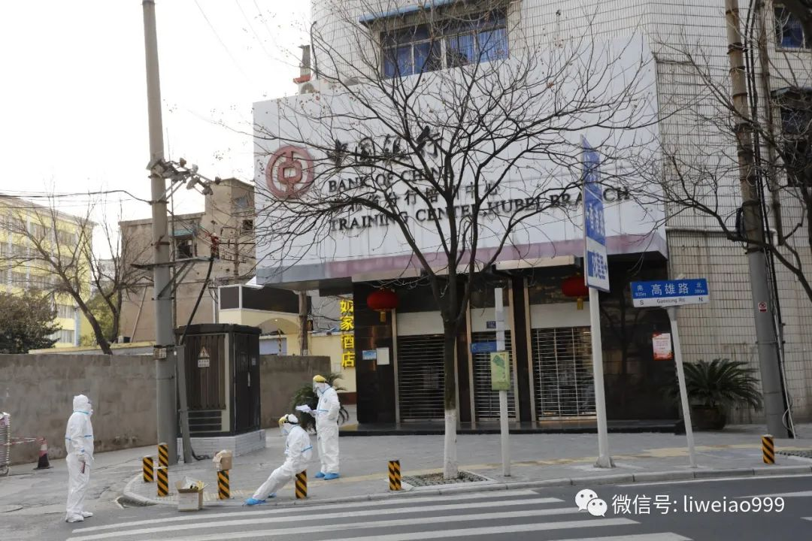
（武汉有一片街区全部是以台湾的地名命名的，比如高雄路、苗栗路。高雄路上也有这么一个隔离点）
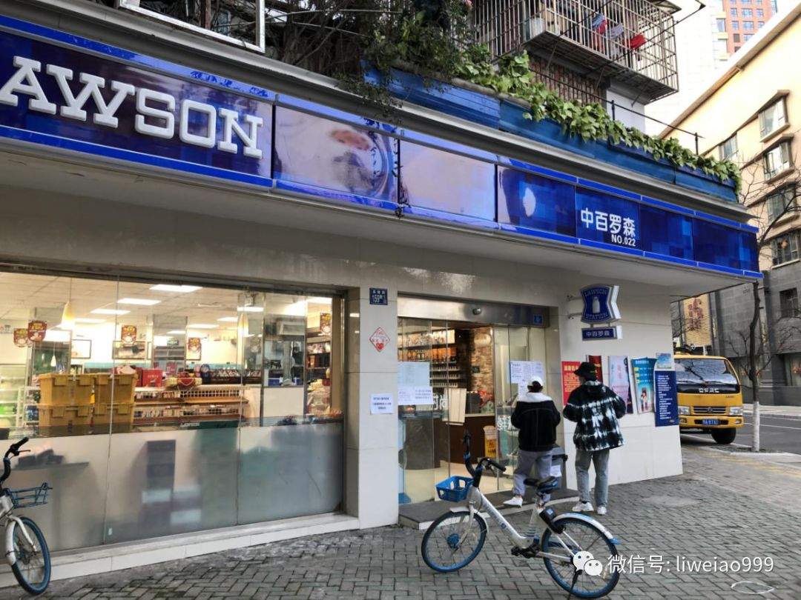
（高雄路上，到了20号这天，小超市也不对个人营业了，必须要小区团购）
有两个年轻人来到店门口，但买不到东西，他们抱怨：“真荒唐，我们都到这里了，却让我们回去团购……”

（就在这超市附近大概20米，惠济路上，一位骑手师傅，一边给自己的电动单车充电，一边打着电话：
“团购，团购你懂么？就是不能给一个人买东西了，得社区组织着去……哎呀，这团购可贵了，一包菜100，200的，但能买着就不错了……”）

花莲社区党员服务中心的这位工作人员，看到我在拍照，突然很紧张对我说，“我的电话在充电，在充电啊，这几天（电话）都被打爆了……”
这些天，武汉的防控管理越收越紧，工作任务的相当一部分，甚至可能是大部分，是否传导到了最基层的工作人员身上……
李微敖
敖虽资浅，愿为良记
长按二维码向我转账
敖虽资浅，愿为良记
受苹果公司新规定影响，微信 iOS 版的赞赏功能被关闭，可通过二维码转账支持公众号。
原文链接 备份链接 非常时期，武汉成了全国人民挂念、祈福的城市。封城后，武汉人民的真实生活是什么样？随着抗“疫”有条不紊的进行，武汉发生了哪些变化？还存在哪些问题？ 正和岛自1月26日起特别推出“叶青专栏”。叶青是一位定居武汉40年的市 …
原文链接 备份链接 几位口罩行业的从业者，都是在大量微信、电话疯狂轰炸的间歇，接受我们采访的。所有人的语速都异常急促——在过去的一周时间内，他们接过工信部、各地应急办、市级政府的电话；也接过各省医院、药店、大小代理商的电话；还有从未打过交 …
原文链接 备份链接 经历整整31天的艰难考验之后，武汉疫情防控已经从无序走向有序，但千万居民的生活从无序到有序才刚刚开始，这个疫情核心区的社会经济生活全面恢复，还面临很多挑战 2020年2月11日，武汉市洪山体育馆武昌方舱医院，社区工作人 …
原文链接 备份链接 2020年2月23日，武汉封城整一个月。以下是武汉在过去一个月中的31个片段，它们来自一线记者的所见、来自市民在社交平台上的记录，它们汇聚在一起，构成了这座城市最难忘的一段记忆。 策划*****｜*********《人 …
原文链接 备份链接 岛语 非常时期，武汉成了全国人民挂念、祈福的城市。封城后，武汉人民的真实生活是什么样？随着抗“疫”有条不紊的进行，武汉发生了哪些变化？还存在哪些问题？ 正和岛自1月26日起特别推出“叶青专栏”。叶青是一位定居武汉40年 …